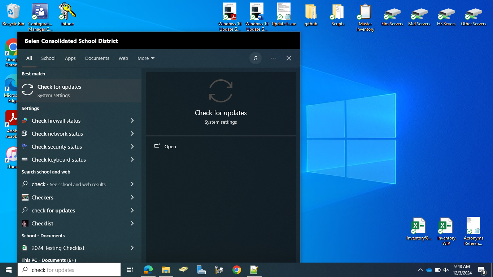
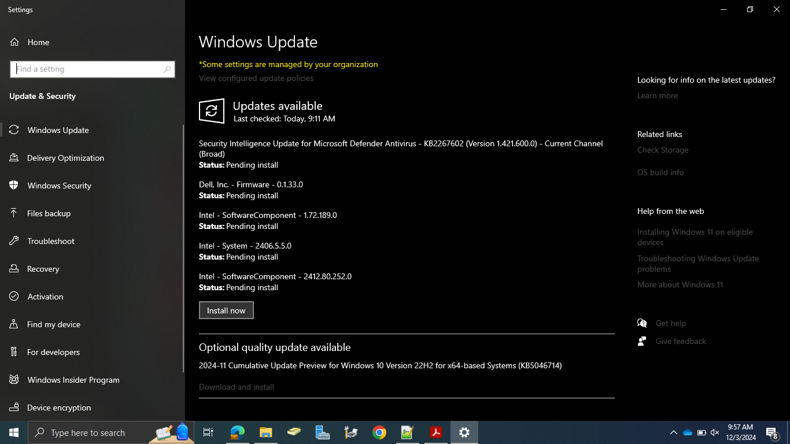
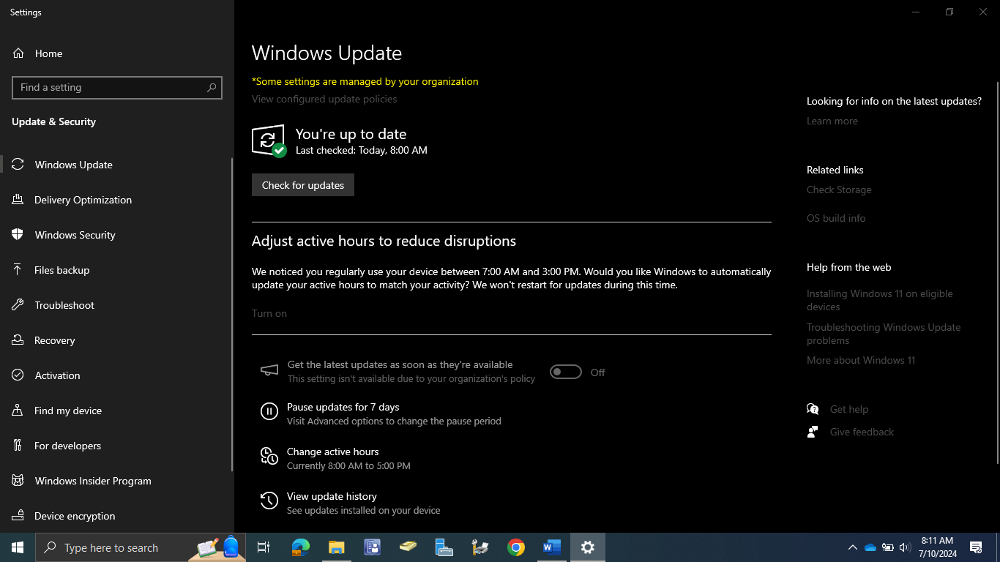
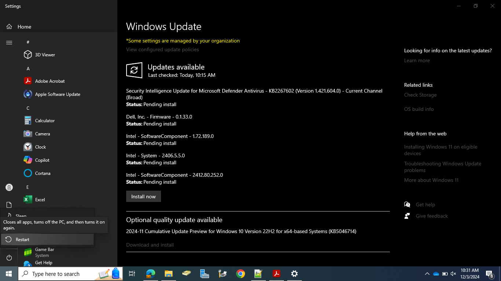

Windows 10 Update Guide
If you are having issues with your device such as it is running slow or certain hardware
options aren’t working and a tech is unable to meet you at that time, follow these steps on
how to update Windows 10 and see if your problem is resolved.
- Click the Start Menu Button in the bottom left-hand corner, and type “check for updates” and then hit Enter.

- You should be greeted by a settings screen that has “Windows Update” at the top and should have a list of needed updates right under it. If so, simply click the “Install now” button underneath the list of updates.

If you do not have a list up updates like shown previously it may be because you either don’t need to
update your device in which case it is recommended you wait for a tech to arrive, or you need to have
Windows 10 check to see if any updates are available. You can do this by clicking the “Check for
updates” button and then follow step 2 if you see any updates listed.

- After the updates are completed, you will need to reboot your computer for them to take effect. To
do this simply go down to the Start Menu again, then click the Power icon , and then finally “
Restart”.

- After restarting it is best to check if you have any more updates again as some updates requires prerequisites before they will appear. Once you can click the “Check for updates” button and receive no additional updates listed check to see if your issue has been resolved. If it has great and if not, your tech should be around to help you shortly.